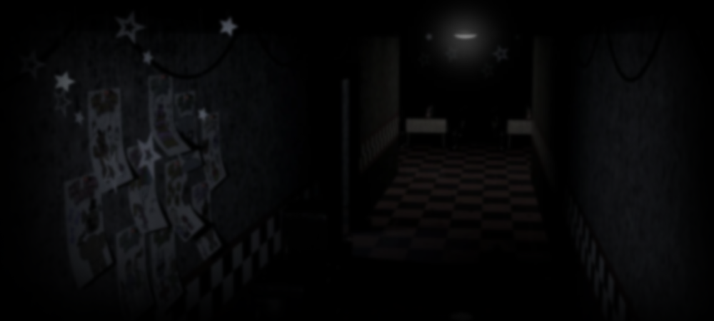

about game |
|
Общая информация |
Своим появлением на свет проект обязан одному человеку – американскому геймдизайнеру Скотту Брейдену Коутену, который пришел в игровую индустрию еще в девяностых годах прошлого столетия. Параллельно он занимался созданием анимации, а также написанием сценариев и рассказов. В 2002 году Коутен выпускает RPG Max, а чуть позже начинает сотрудничество с Hope Animation. К моменту начала работы над Five Nights at Freddy’s Скотт снял полтора десятка фильмов (в основном короткометражек), к которым сам же и написал сценарии. Также на его счету было участие в создании сорока с лишним игр, в том числе серий Legacy of Flan, Bogart и Slumberfish. Трудиться над ФНаФ Коутен стал в начале 2014 года. На тот момент он был разочарован провалом своего предыдущего творения – Chipper & Sons Lumber Co. Пользователи сравнивали бобра, который был главным персонажем, со страшным животным-аниматроником. Так и появилась идея создания проекта, в котором ключевую роль сыграют зверушки-роботы. Уже к концу лета FNAF появилась в Steam Greenlight, IndieDB и Desura, после чего стала хорошо продаваться за пять долларов. А создатель проекта на волне невероятного успеха первой части тут же приступил к созданию сиквела. |
|
Трейлер игры |
|
Жанр |
«Пять ночей у Фредди» представляет собой смесь жанров survival horror и point-and-click с вкраплениями сцен, которым позавидуют добротные голливудские ужастики. Игра наполнена интересными загадками, жуткими сценами и скримерами. При этом геймерам приходится принимать непростые решения в атмосфере постоянного страха и паранойи. Чтобы выжить, пользователю нужно максимально собраться и сосредоточиться на происходящем вокруг. Ведь малейшая ошибка приводит к гибели и провалу прохождения. |
Сюжет |
Главный герой ФНаФ – это парень по имени Майк Шмидт, устроившийся работать ночным охранником в пиццерию Freddy Fazbear’s Pizza. Его задача – пережить очередную смену, которая длится с полуночи до шести утра. Все это время охранник находится в отдельном помещении и управляет дверями с электронными замками. Благодаря голосовым сообщениям, оставленным Майку его предшественником, он понимает, что в пиццерии давно творится что-то неладное. Об этом же свидетельствуют и другие источники информации: истории телефонных звонков и газетные вырезки. |
|  | |
Преимущества FNaF 1 |
Для любителей «выживалок» и ужастиков плюсы Five Nights at Freddy’s очевидны. Это:
|